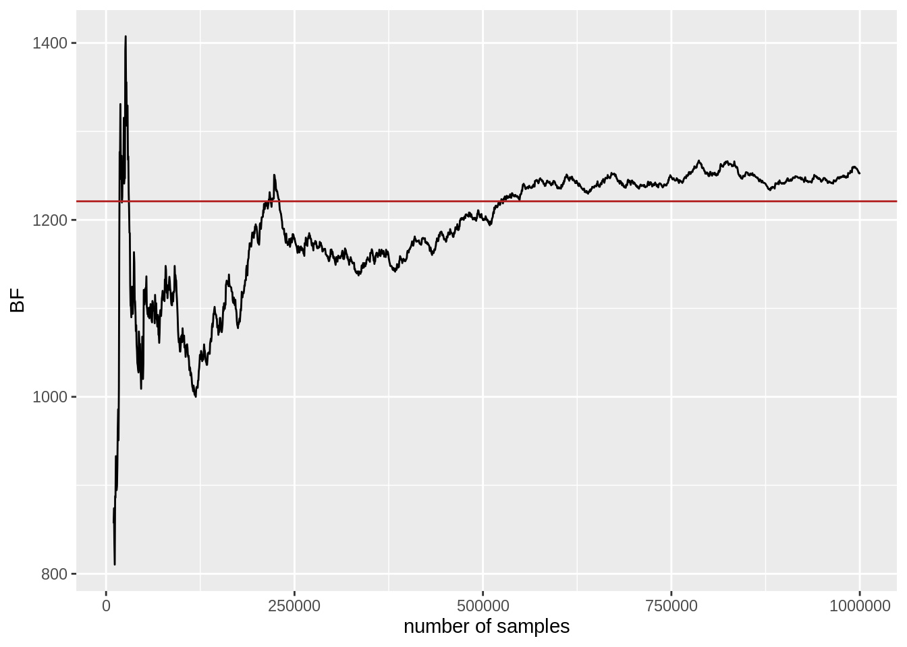

Statements b. and e. are correct.
10.3 Bayes factors
At the end of the previous section, we saw that we can use the AIC-approach to calculate an approximate value of the posterior probability \(P(M_{i} \mid D)\) for model \(M_{i}\) given data \(D\). The Bayes factor approach is similar to this, but avoids taking priors over models into the equation by focusing on the extent to which data \(D\) changes our beliefs about which model is more likely.
Take two Bayesian models:
- \(M_1\) has prior \(P(\theta_1 \mid M_1)\) and likelihood \(P(D \mid \theta_1, M_1)\)
- \(M_2\) has prior \(P(\theta_2 \mid M_2)\) and likelihood \(P(D \mid \theta_2, M_2)\)
Using Bayes rule, we compute the posterior odds of models (given the data) as the product of the likelihood ratio and the prior odds.
\[\underbrace{\frac{P(M_1 \mid D)}{P(M_2 \mid D)}}_{\text{posterior odds}} = \underbrace{\frac{P(D \mid M_1)}{P(D \mid M_2)}}_{\text{Bayes factor}} \ \underbrace{\frac{P(M_1)}{P(M_2)}}_{\text{prior odds}}\]
The likelihood ratio is also called the Bayes factor. Formally, the Bayes factor is the factor by which a rational agent changes her prior odds in the light of observed data to arrive at the posterior odds. More intuitively, the Bayes factor quantifies the strength of evidence given by the data about the models of interest. It expresses this evidence in terms of the models’ relative prior predictive accuracy. To see the latter, let’s expand the Bayes factor as what it actually is: the ratio of marginal likelihoods.
\[ \frac{P(D \mid M_1)}{P(D \mid M_2)} = \frac{\int P(\theta_1 \mid M_1) \ P(D \mid \theta_1, M_1) \text{ d}\theta_1}{\int P(\theta_2 \mid M_2) \ P(D \mid \theta_2, M_2) \text{ d}\theta_2} \]
Three insights are to be gained from this expansion. Firstly, the Bayes factor is a measure of how well each model would have predicted the data ex ante, i.e., before having seen any data. In this way, it is diametrically opposed to a concept like AIC, which relies on models’ maximum likelihood fits (therefore using the data, so being ex post).
Secondly, the marginal likelihood of a model is exactly the quantity that we identified (in the context of parameter estimation) as being very hard to compute, especially for complex models. The fact that marginal likelihoods are hard to compute was the reason that methods like MCMC sampling are useful, since they give posterior samples without requiring the calculation of marginal likelihoods. It follows that Bayes factors can be very difficult to compute in general. However, for many prominent models, it is possible to calculate Bayes factors analytically if the right kinds of priors are specified (Rouder et al. 2009; Rouder and Morey 2012; Gronau, Ly, and Wagenmakers 2019). We will see an example of this in Chapter 11. Also, as we will see in the following there are very clever approaches to computing Bayes factors in special cases and good algorithms for approximating marginal likelihoods also for complex models.
Thirdly, Bayes factor model comparison implicitly (and quite vigorously) punishes model complexity, but in a more sophisticated manner than just counting free parameters. To appreciate this intuitively, imagine a model with a large parameter set and a very diffuse, uninformative prior that spreads its probability over a wide range of parameter values. Since Bayes factors are computed based on ex ante predictions, a diffuse model is punished for its imprecision of prior predictions because we integrate over all parameters (weighted by priors) and their associated likelihood.
As for notation, we write:
\[\text{BF}_{12} = \frac{P(D \mid M_1)}{P(D \mid M_2)}\] for the Bayes factor in favor of model \(M_1\) over model \(M_2\). This quantity can take on positive values, which are often translated into natural language as follows:
| \(BF_{12}\) | interpretation |
|---|---|
| 1 | irrelevant data |
| 1 - 3 | hardly worth ink or breath |
| 3 - 6 | anecdotal |
| 6 - 10 | now we’re talking: substantial |
| 10 - 30 | strong |
| 30 - 100 | very strong |
| 100 + | decisive (bye, bye \(M_2\)!) |
As \(\text{BF}_{12} = \text{BF}_{21}^{-1}\), it suffices to give this translation into natural language only for values \(\ge 1\).
There are at least two general approaches to calculating or approximating Bayes factors, paired here with a (non-exhaustive) list of example methods:
- get each model’s marginal likelihood
- get Bayes factor directly
10.3.1 Grid approximation
We can use grid approximation to approximate a model’s marginal likelihood if the model is small enough, say, no more than 4-5 free parameters. Grid approximation considers discrete values for each parameter evenly spaced over the whole range of plausible parameter values, thereby approximating the integral in the definition of marginal likelihoods.
Let’s calculate an example for the comparison of the exponential and the power model of forgetting. To begin with, we need to define a prior over parameters to obtain Bayesian versions of the exponential and power model. Here, we assume flat priors over a reasonable range of parameter values for simplicity. For the exponential model, we choose:
\[ \begin{aligned} P(k \mid a, b, N, M_{\text{exp}}) & = \text{Binom}(k,N, a \exp (-bt_i)) \\ P(a \mid M_{\text{exp}}) & = \text{Uniform}(a, 0, 1.5) \\ P(b \mid M_{\text{exp}}) & = \text{Uniform}(b, 0, 1.5) \end{aligned} \]
The (Bayesian) power model is given by:
\[ \begin{aligned} P(k \mid c, d, N, M_{\text{pow}}) & = \text{Binom}(k,N, c\ t_i^{-d}) \\ P(c \mid M_{\text{pow}}) & = \text{Uniform}(c, 0, 1.5) \\ P(d \mid M_{\text{pow}}) & = \text{Uniform}(d, 0, 1.5) \end{aligned} \]
We can also express these models in code, like so:
# prior exponential model
priorExp <- function(a, b){
dunif(a, 0, 1.5) * dunif(b, 0, 1.5)
}
# likelihood function exponential model
lhExp <- function(a, b){
theta <- a * exp(-b * t)
theta[theta <= 0.0] <- 1.0e-5
theta[theta >= 1.0] <- 1 - 1.0e-5
prod(dbinom(x = obs, prob = theta, size = 100))
}
# prior power model
priorPow <- function(c, d){
dunif(c, 0, 1.5) * dunif(d, 0, 1.5)
}
# likelihood function power model
lhPow <- function(c, d){
theta <- c * t^(-d)
theta[theta <= 0.0] <- 1.0e-5
theta[theta >= 1.0] <- 1 - 1.0e-5
prod(dbinom(x = obs, prob = theta, size = 100))
}To approximate each model’s marginal likelihood via grid approximation, we consider equally spaced values for both parameters (a tighly knit grid), assess the prior and likelihood for each parameter pair and finally take the sum over all of the visited values:
# make sure the functions accept vector input
lhExp <- Vectorize(lhExp)
lhPow <- Vectorize(lhPow)
# define the step size of the grid
stepsize <- 0.01
# calculate the marginal likelihood
marg_lh <- expand.grid(
x = seq(0.005, 1.495, by = stepsize),
y = seq(0.005, 1.495, by = stepsize)
) %>%
mutate(
lhExp = lhExp(x, y), priExp = 1 / length(x), # uniform priors!
lhPow = lhPow(x, y), priPow = 1 / length(x)
)
# output result
str_c(
"BF in favor of exponential model: ",
with(marg_lh, sum(priExp * lhExp) / sum(priPow * lhPow)) %>% round(2)
)## [1] "BF in favor of exponential model: 1221.39"Based on this computation, we would be entitled to conclude that the data provide overwhelming evidence in favor of the exponential model. The result tells us that a rational agent should adjust her prior odds by a factor of more than 1000 in favor of the exponential model when updating her beliefs with the data. In other words, the data tilt our beliefs very strongly towards the exponential model, no matter what we believed initially. In this sense, the data provide strong evidence for the exponential model.
10.3.2 Naive Monte Carlo
For simple models (with maybe 4-5 free parameters), we can also use naive Monte Carlo sampling to approximate Bayes factors. In particular, we can approximate the marginal likelihood by taking samples from the prior, calculating the likelihood of the data for each sampled parameter tuple, and then averaging over all calculated likelihoods:
\[P(D, M_i) = \int P(D \mid \theta, M_i) \ P(\theta \mid M_i) \ \text{d}\theta \approx \frac{1}{n} \sum^{n}_{\theta_j \sim P(\theta \mid M_i)} P(D \mid \theta_j, M_i)\]
Here is a calculation using one million samples from the prior of each model:
nSamples <- 1000000
# sample from the prior
a <- runif(nSamples, 0, 1.5)
b <- runif(nSamples, 0, 1.5)
# calculate likelihood of data for each sample
lhExpVec <- lhExp(a, b)
lhPowVec <- lhPow(a, b)
# compute marginal likelihoods
str_c(
"BF in favor of exponential model: ",
round(mean(lhExpVec) / mean(lhPowVec), 2)
)## [1] "BF in favor of exponential model: 1251.66"We can also check the time course of our MC-estimate by a plot like that in Figure 10.3. The plot shows the current estimate of the Bayes factor on the \(y\)-axis after having taken the number of samples given on the \(x\)-axis. We see that the initial calculations (after only 10,000 samples) are far off, but that the approximation finally gets reasonably close to the value calculated by grid approximation, which is shown as the red line.

Figure 10.3: Temporal development (as more samples come in) of the Monte Carlo estimate of the Bayes factor in favor of the exponential model over the power model of forgetting. The red horizontal line indicates the Bayes factor estimate obtained previously via grid approximation.
Exercise 11.3
Which statements concerning Bayes Factors (BF) are correct?
- The Bayes Factor shows the absolute probability of a particular model to be a good explanation of the observed data.
- If \(BF_{12} = 11\), one should conclude that there is strong evidence in favor of \(M_1\).
- Grid approximation allows us to compare no more than five models simultaneously.
- With the Naive Monte Carlo method, we can only approximate the BF for models with continuous parameters.
- BF computation penalizes more complex models.
10.3.3 Excursion: Bridge sampling
For more complex models (e.g., high-dimensional/hierarchical parameter spaces), naive Monte Carlo methods can be highly inefficient. If random sampling of parameter values from the priors is unlikely to deliver values for which the likelihood of the data is reasonably high, most naive MC samples will contribute very little information to the overall estimate of the marginal likelihood. For this reason, there are better sampling-based procedures which preferentially sample a posteriori credible parameter values (given the data) and use clever math to compensate for using the wrong distribution to sample from. This is the main idea behind approaches like importance sampling. A very promising approach is in particular bridge sampling, which also has its own R package (Gronau et al. 2017).
We will not go into the formal details of this method, but just showcase here an application of the bridgesampling package.
This approach requires samples from the posterior, which we can obtain using Stan (see Section 9.3.2).
Towards this end, we first assemble the data for input to the Stan program in a list:
The models are implemented in Stan. We here only show the exponential model.
data {
int<lower=1> N ;
int<lower=0,upper=N> k[6] ;
int<lower=0> t[6];
}
parameters {
real<lower=0,upper=1.5> a ;
real<lower=0,upper=1.5> b ;
}
model {
// likelihood
for (i in 1:6) {
target += binomial_lpmf(k[i] | N, a * exp(-b * t[i])) ;
}
}We then use Stan to obtain samples from the posterior in the usual way. To get reliable estimates of Bayes factors via bridge sampling, we should take a much larger number of samples than we usually would for a reliable estimation of, say, the posterior means and credible intervals.
stan_fit_expon <- rstan::stan(
# where is the Stan code
file = 'models_stan/model_comp_exponential_forgetting.stan',
# data to supply to the Stan program
data = forgetting_data,
# how many iterations of MCMC
iter = 20000,
# how many warmup steps
warmup = 2000
)##
## SAMPLING FOR MODEL 'model_comp_exponential_forgetting' NOW (CHAIN 1).
## Chain 1:
## Chain 1: Gradient evaluation took 1.4e-05 seconds
## Chain 1: 1000 transitions using 10 leapfrog steps per transition would take 0.14 seconds.
## Chain 1: Adjust your expectations accordingly!
## Chain 1:
## Chain 1:
## Chain 1: Iteration: 1 / 20000 [ 0%] (Warmup)
## Chain 1: Iteration: 2000 / 20000 [ 10%] (Warmup)
## Chain 1: Iteration: 2001 / 20000 [ 10%] (Sampling)
## Chain 1: Iteration: 4000 / 20000 [ 20%] (Sampling)
## Chain 1: Iteration: 6000 / 20000 [ 30%] (Sampling)
## Chain 1: Iteration: 8000 / 20000 [ 40%] (Sampling)
## Chain 1: Iteration: 10000 / 20000 [ 50%] (Sampling)
## Chain 1: Iteration: 12000 / 20000 [ 60%] (Sampling)
## Chain 1: Iteration: 14000 / 20000 [ 70%] (Sampling)
## Chain 1: Iteration: 16000 / 20000 [ 80%] (Sampling)
## Chain 1: Iteration: 18000 / 20000 [ 90%] (Sampling)
## Chain 1: Iteration: 20000 / 20000 [100%] (Sampling)
## Chain 1:
## Chain 1: Elapsed Time: 0.055513 seconds (Warm-up)
## Chain 1: 0.444982 seconds (Sampling)
## Chain 1: 0.500495 seconds (Total)
## Chain 1:
##
## SAMPLING FOR MODEL 'model_comp_exponential_forgetting' NOW (CHAIN 2).
## Chain 2:
## Chain 2: Gradient evaluation took 1.1e-05 seconds
## Chain 2: 1000 transitions using 10 leapfrog steps per transition would take 0.11 seconds.
## Chain 2: Adjust your expectations accordingly!
## Chain 2:
## Chain 2:
## Chain 2: Iteration: 1 / 20000 [ 0%] (Warmup)
## Chain 2: Iteration: 2000 / 20000 [ 10%] (Warmup)
## Chain 2: Iteration: 2001 / 20000 [ 10%] (Sampling)
## Chain 2: Iteration: 4000 / 20000 [ 20%] (Sampling)
## Chain 2: Iteration: 6000 / 20000 [ 30%] (Sampling)
## Chain 2: Iteration: 8000 / 20000 [ 40%] (Sampling)
## Chain 2: Iteration: 10000 / 20000 [ 50%] (Sampling)
## Chain 2: Iteration: 12000 / 20000 [ 60%] (Sampling)
## Chain 2: Iteration: 14000 / 20000 [ 70%] (Sampling)
## Chain 2: Iteration: 16000 / 20000 [ 80%] (Sampling)
## Chain 2: Iteration: 18000 / 20000 [ 90%] (Sampling)
## Chain 2: Iteration: 20000 / 20000 [100%] (Sampling)
## Chain 2:
## Chain 2: Elapsed Time: 0.054433 seconds (Warm-up)
## Chain 2: 0.461635 seconds (Sampling)
## Chain 2: 0.516068 seconds (Total)
## Chain 2:
##
## SAMPLING FOR MODEL 'model_comp_exponential_forgetting' NOW (CHAIN 3).
## Chain 3:
## Chain 3: Gradient evaluation took 9e-06 seconds
## Chain 3: 1000 transitions using 10 leapfrog steps per transition would take 0.09 seconds.
## Chain 3: Adjust your expectations accordingly!
## Chain 3:
## Chain 3:
## Chain 3: Iteration: 1 / 20000 [ 0%] (Warmup)
## Chain 3: Iteration: 2000 / 20000 [ 10%] (Warmup)
## Chain 3: Iteration: 2001 / 20000 [ 10%] (Sampling)
## Chain 3: Iteration: 4000 / 20000 [ 20%] (Sampling)
## Chain 3: Iteration: 6000 / 20000 [ 30%] (Sampling)
## Chain 3: Iteration: 8000 / 20000 [ 40%] (Sampling)
## Chain 3: Iteration: 10000 / 20000 [ 50%] (Sampling)
## Chain 3: Iteration: 12000 / 20000 [ 60%] (Sampling)
## Chain 3: Iteration: 14000 / 20000 [ 70%] (Sampling)
## Chain 3: Iteration: 16000 / 20000 [ 80%] (Sampling)
## Chain 3: Iteration: 18000 / 20000 [ 90%] (Sampling)
## Chain 3: Iteration: 20000 / 20000 [100%] (Sampling)
## Chain 3:
## Chain 3: Elapsed Time: 0.05527 seconds (Warm-up)
## Chain 3: 0.487729 seconds (Sampling)
## Chain 3: 0.542999 seconds (Total)
## Chain 3:
##
## SAMPLING FOR MODEL 'model_comp_exponential_forgetting' NOW (CHAIN 4).
## Chain 4: Rejecting initial value:
## Chain 4: Error evaluating the log probability at the initial value.
## Chain 4: Exception: binomial_lpmf: Probability parameter is 1.02476, but must be in the interval [0, 1] (in 'model3e961577733f_model_comp_exponential_forgetting' at line 13)
##
## Chain 4:
## Chain 4: Gradient evaluation took 1e-05 seconds
## Chain 4: 1000 transitions using 10 leapfrog steps per transition would take 0.1 seconds.
## Chain 4: Adjust your expectations accordingly!
## Chain 4:
## Chain 4:
## Chain 4: Iteration: 1 / 20000 [ 0%] (Warmup)
## Chain 4: Iteration: 2000 / 20000 [ 10%] (Warmup)
## Chain 4: Iteration: 2001 / 20000 [ 10%] (Sampling)
## Chain 4: Iteration: 4000 / 20000 [ 20%] (Sampling)
## Chain 4: Iteration: 6000 / 20000 [ 30%] (Sampling)
## Chain 4: Iteration: 8000 / 20000 [ 40%] (Sampling)
## Chain 4: Iteration: 10000 / 20000 [ 50%] (Sampling)
## Chain 4: Iteration: 12000 / 20000 [ 60%] (Sampling)
## Chain 4: Iteration: 14000 / 20000 [ 70%] (Sampling)
## Chain 4: Iteration: 16000 / 20000 [ 80%] (Sampling)
## Chain 4: Iteration: 18000 / 20000 [ 90%] (Sampling)
## Chain 4: Iteration: 20000 / 20000 [100%] (Sampling)
## Chain 4:
## Chain 4: Elapsed Time: 0.055248 seconds (Warm-up)
## Chain 4: 0.424547 seconds (Sampling)
## Chain 4: 0.479795 seconds (Total)
## Chain 4:stan_fit_power <- rstan::stan(
# where is the Stan code
file = 'models_stan/model_comp_power_forgetting.stan',
# data to supply to the Stan program
data = forgetting_data,
# how many iterations of MCMC
iter = 20000,
# how many warmup steps
warmup = 2000
)##
## SAMPLING FOR MODEL 'model_comp_power_forgetting' NOW (CHAIN 1).
## Chain 1:
## Chain 1: Gradient evaluation took 1.2e-05 seconds
## Chain 1: 1000 transitions using 10 leapfrog steps per transition would take 0.12 seconds.
## Chain 1: Adjust your expectations accordingly!
## Chain 1:
## Chain 1:
## Chain 1: Iteration: 1 / 20000 [ 0%] (Warmup)
## Chain 1: Iteration: 2000 / 20000 [ 10%] (Warmup)
## Chain 1: Iteration: 2001 / 20000 [ 10%] (Sampling)
## Chain 1: Iteration: 4000 / 20000 [ 20%] (Sampling)
## Chain 1: Iteration: 6000 / 20000 [ 30%] (Sampling)
## Chain 1: Iteration: 8000 / 20000 [ 40%] (Sampling)
## Chain 1: Iteration: 10000 / 20000 [ 50%] (Sampling)
## Chain 1: Iteration: 12000 / 20000 [ 60%] (Sampling)
## Chain 1: Iteration: 14000 / 20000 [ 70%] (Sampling)
## Chain 1: Iteration: 16000 / 20000 [ 80%] (Sampling)
## Chain 1: Iteration: 18000 / 20000 [ 90%] (Sampling)
## Chain 1: Iteration: 20000 / 20000 [100%] (Sampling)
## Chain 1:
## Chain 1: Elapsed Time: 0.045508 seconds (Warm-up)
## Chain 1: 0.37634 seconds (Sampling)
## Chain 1: 0.421848 seconds (Total)
## Chain 1:
##
## SAMPLING FOR MODEL 'model_comp_power_forgetting' NOW (CHAIN 2).
## Chain 2: Rejecting initial value:
## Chain 2: Error evaluating the log probability at the initial value.
## Chain 2: Exception: binomial_lpmf: Probability parameter is 1.31725, but must be in the interval [0, 1] (in 'model3e9655fa1358_model_comp_power_forgetting' at line 13)
##
## Chain 2:
## Chain 2: Gradient evaluation took 1e-05 seconds
## Chain 2: 1000 transitions using 10 leapfrog steps per transition would take 0.1 seconds.
## Chain 2: Adjust your expectations accordingly!
## Chain 2:
## Chain 2:
## Chain 2: Iteration: 1 / 20000 [ 0%] (Warmup)
## Chain 2: Iteration: 2000 / 20000 [ 10%] (Warmup)
## Chain 2: Iteration: 2001 / 20000 [ 10%] (Sampling)
## Chain 2: Iteration: 4000 / 20000 [ 20%] (Sampling)
## Chain 2: Iteration: 6000 / 20000 [ 30%] (Sampling)
## Chain 2: Iteration: 8000 / 20000 [ 40%] (Sampling)
## Chain 2: Iteration: 10000 / 20000 [ 50%] (Sampling)
## Chain 2: Iteration: 12000 / 20000 [ 60%] (Sampling)
## Chain 2: Iteration: 14000 / 20000 [ 70%] (Sampling)
## Chain 2: Iteration: 16000 / 20000 [ 80%] (Sampling)
## Chain 2: Iteration: 18000 / 20000 [ 90%] (Sampling)
## Chain 2: Iteration: 20000 / 20000 [100%] (Sampling)
## Chain 2:
## Chain 2: Elapsed Time: 0.044843 seconds (Warm-up)
## Chain 2: 0.333266 seconds (Sampling)
## Chain 2: 0.378109 seconds (Total)
## Chain 2:
##
## SAMPLING FOR MODEL 'model_comp_power_forgetting' NOW (CHAIN 3).
## Chain 3:
## Chain 3: Gradient evaluation took 1e-05 seconds
## Chain 3: 1000 transitions using 10 leapfrog steps per transition would take 0.1 seconds.
## Chain 3: Adjust your expectations accordingly!
## Chain 3:
## Chain 3:
## Chain 3: Iteration: 1 / 20000 [ 0%] (Warmup)
## Chain 3: Iteration: 2000 / 20000 [ 10%] (Warmup)
## Chain 3: Iteration: 2001 / 20000 [ 10%] (Sampling)
## Chain 3: Iteration: 4000 / 20000 [ 20%] (Sampling)
## Chain 3: Iteration: 6000 / 20000 [ 30%] (Sampling)
## Chain 3: Iteration: 8000 / 20000 [ 40%] (Sampling)
## Chain 3: Iteration: 10000 / 20000 [ 50%] (Sampling)
## Chain 3: Iteration: 12000 / 20000 [ 60%] (Sampling)
## Chain 3: Iteration: 14000 / 20000 [ 70%] (Sampling)
## Chain 3: Iteration: 16000 / 20000 [ 80%] (Sampling)
## Chain 3: Iteration: 18000 / 20000 [ 90%] (Sampling)
## Chain 3: Iteration: 20000 / 20000 [100%] (Sampling)
## Chain 3:
## Chain 3: Elapsed Time: 0.046901 seconds (Warm-up)
## Chain 3: 0.365732 seconds (Sampling)
## Chain 3: 0.412633 seconds (Total)
## Chain 3:
##
## SAMPLING FOR MODEL 'model_comp_power_forgetting' NOW (CHAIN 4).
## Chain 4: Rejecting initial value:
## Chain 4: Error evaluating the log probability at the initial value.
## Chain 4: Exception: binomial_lpmf: Probability parameter is 1.16612, but must be in the interval [0, 1] (in 'model3e9655fa1358_model_comp_power_forgetting' at line 13)
##
## Chain 4:
## Chain 4: Gradient evaluation took 1e-05 seconds
## Chain 4: 1000 transitions using 10 leapfrog steps per transition would take 0.1 seconds.
## Chain 4: Adjust your expectations accordingly!
## Chain 4:
## Chain 4:
## Chain 4: Iteration: 1 / 20000 [ 0%] (Warmup)
## Chain 4: Iteration: 2000 / 20000 [ 10%] (Warmup)
## Chain 4: Iteration: 2001 / 20000 [ 10%] (Sampling)
## Chain 4: Iteration: 4000 / 20000 [ 20%] (Sampling)
## Chain 4: Iteration: 6000 / 20000 [ 30%] (Sampling)
## Chain 4: Iteration: 8000 / 20000 [ 40%] (Sampling)
## Chain 4: Iteration: 10000 / 20000 [ 50%] (Sampling)
## Chain 4: Iteration: 12000 / 20000 [ 60%] (Sampling)
## Chain 4: Iteration: 14000 / 20000 [ 70%] (Sampling)
## Chain 4: Iteration: 16000 / 20000 [ 80%] (Sampling)
## Chain 4: Iteration: 18000 / 20000 [ 90%] (Sampling)
## Chain 4: Iteration: 20000 / 20000 [100%] (Sampling)
## Chain 4:
## Chain 4: Elapsed Time: 0.046359 seconds (Warm-up)
## Chain 4: 0.398662 seconds (Sampling)
## Chain 4: 0.445021 seconds (Total)
## Chain 4:The bridgesampling package can then be used to calculate each model’s marginal likelihood.
expon_bridge <- bridgesampling::bridge_sampler(stan_fit_expon, silent = T)
power_bridge <- bridgesampling::bridge_sampler(stan_fit_power, silent = T)We then obtain an estimate of the Bayes factor in favor of the exponential model with this function:
## Estimated Bayes factor in favor of expon_bridge over power_bridge: 1220.52849References
Gronau, Quentin F., Alexander Ly, and Eric-Jan Wagenmakers. 2019. “Informed Bayesian T-Tests.” The American Statistician.
Gronau, Quentin F., Alexandra Sarafoglou, Dora Matzke, Alexander Ly, Udo Boehm, Maarten Marsman, David S. Leslie, Jonathan J. Forster, Eric-Jan Wagenmakers, and Helen Steingroever. 2017. “A Tutorial on Bridge Sampling.” Journal of Mathematical Psychology 81: 80–97.
Rouder, Jeffrey N., and Richard D. Morey. 2012. “Default Bayes Factors for Model Selection in Regression.” Multivariate Behavioral Research 47 (6): 877–903.
Rouder, Jeffrey N., Paul l. Speckman, Dongchu Sun, Richard D. Morey, and Geoffrey Iverson. 2009. “Bayesian T Tests for Accepting and Rejecting the Null Hypothesis.” Psychonomic Bulletin & Review 16 (2): 225–37.